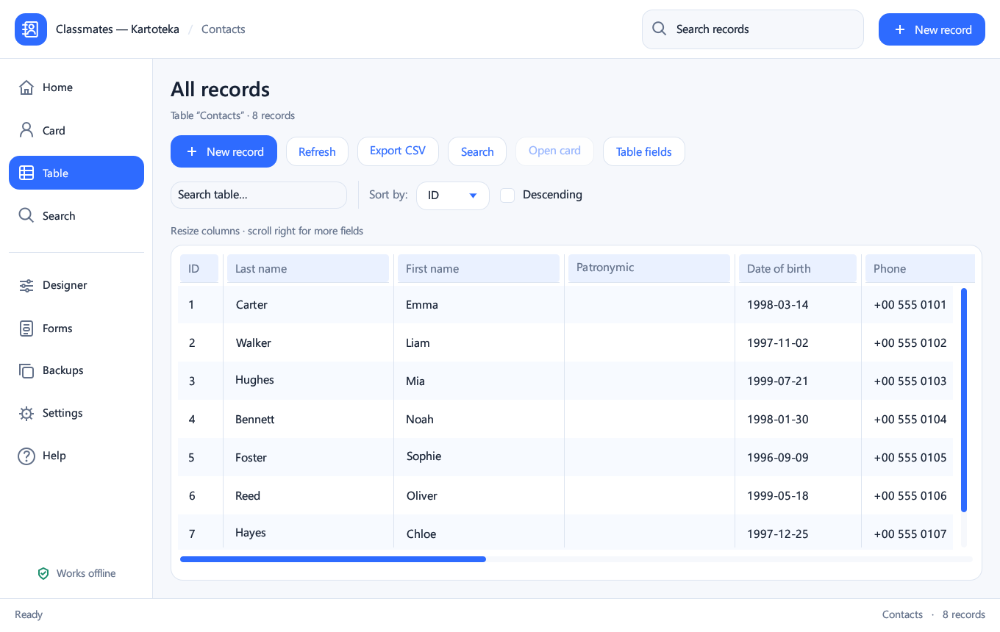

Kartoteka
Keep contacts, collections and other lists on your own computer. Cards, tables, custom fields, photos, documents, search and backups in one application.
Release · 0.5.0Before you startWindows 11 x64. No administrator rights needed. The EXE is unsigned.

What's inside
Installation, features, data, checks.
Install and start
Run Kartoteka-0.5.0-Setup.exe and keep the suggested user folder. Administrator rights and Rust are not required. Save your work and close the old application before updating. For a portable launch, extract the entire ZIP; keep the EXE and three DLL files together.
Runs locally
No account, no cloud, no telemetry. Data stays unencrypted in the user folder; addresses open only when you click them.
Local · offlineFeatures
Checked
- Automatic checks on GitHub Actions: formatting, build, 39 tests
- SHA-256 checksums for the release files (SHA256SUMS.txt)
- Version 0.5.0 with a description of the changes
- Interface and documentation in Russian, German and English
- Installer checked against the protocol in RELEASE-CHECKS.md
Try it in the browser
A sample card index with invented entries: search, open a card, add or change a record. Everything stays in memory — reloading restores the original sample.
Features
- Record cards and a table with resizable columns.
- Custom tables and 11 field types: short and long text, integers and decimals, date, time, date/time, checkbox, URL, photo and document.
- Photo previews, managed local document copies and website links.
- Search across the selected table, loaded-row filtering and CSV export.
- Back up the database and attachments; a safety copy is made before restoring.
- Light theme, 80–150% scaling, collapsible menu and RU/DE/EN interface.
Requirements and limitations
Tested on Windows 11 x64. The EXE is unsigned. The table shows up to 2,000 rows and search up to 500 results. Free-form layout editing and Microsoft Access import are not implemented. Windows DPI 125/150% and two monitors were not separately tested; font smoothing depends on the egui renderer. No telemetry; core features work offline.
Rights and use
The source code is public for viewing; this is not an open-source licence. An unmodified release may be downloaded and run for personal use. Details: RIGHTS.md; rights to third-party components: third-party/README.md.